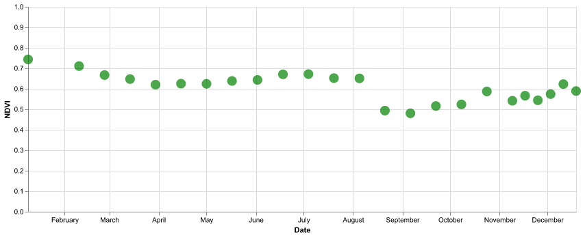

import ee
import pandas as pd
import altair as alt
from IPython.display import Image
ee.Initialize(project='ee-braaten') # Replace with your project IDDitch the Boilerplate: Use Earth Engine’s On-the-Fly Landsat Composites
Earth Engine
Landsat
Remote Sensing
Data-driven stories and practical notes on Earth Engine, geospatial analysis, and remote sensing.
Keywords
Earth Engine, Geospatial Analysis, Python, Google Cloud, Remote Sensing, Raster Data, Datasets
How much of your Landsat analysis code is just preprocessing? Cloud masking, filtering scenes, mosaicking pixels—it’s necessary work, but it’s also repetitive boilerplate that clutters your scripts and slows you down.
Good news: Earth Engine generates cloud-free Landsat composites on the fly. Load them like any ImageCollection and skip straight to analysis.
What You Get
The LANDSAT/COMPOSITES/C02 collections provide cloud-masked composites at three temporal resolutions—8-day, 32-day, and annual—spanning Landsat 4–9 data from 1984 to present. These are built from USGS Level-2 Surface Reflectance and, after strict quality filtering, use a median compositor within each time window.
Two types of collections:
Surface Reflectance: blue, green, red, NIR, SWIR1, SWIR2, thermal surface temperature
LANDSAT/COMPOSITES/C02/T1_L2_8DAYLANDSAT/COMPOSITES/C02/T1_L2_32DAYLANDSAT/COMPOSITES/C02/T1_L2_ANNUAL
Spectral Indices: BAI, EVI, NBR, NDVI, NDWI (each index in its own collection)
- Example:
LANDSAT/COMPOSITES/C02/T1_L2_8DAY_NDVI - Example:
LANDSAT/COMPOSITES/C02/T1_L2_32DAY_BAI - Example:
LANDSAT/COMPOSITES/C02/T1_L2_ANNUAL_NDVI
These save you from writing (and maintaining) the typical cloud masking functions, date filters, and mosaicking logic that otherwise clutter every Landsat workflow.
How they’re made
- Source data: USGS Level-2 Surface Reflectance (Landsat 4–9).
- Unified collections across Landsat 4–9 instruments.
- Temporal compositing: median within each 8‑day, 32‑day, or annual window.
- Strict filtering applied before compositing, including:
- Limit Landsat 7 to 1999–2017 (orbital drift / scene acquisition time)
- Omit Landsat 8 data before 2013‑05‑01 (orbit stability)
- Omit scenes with WRS_ROW ≥ 122 (no nighttime images)
- Keep only pixels QA‑flagged as clear
- Omit L4–L7 pixels with ATMOS_OPACITY > 300 (haze)
- Omit L8–L9 pixels with any QA_AEROSOL issues
- Omit saturated or out‑of‑bounds pixels
A Fire History: The Dixie Fire Through Landsat Composites
Let’s use these composites to tell the story of California’s 2021 Dixie Fire—the state’s largest single-source wildfire at the time. We’ll examine the landscape before the fire, track vegetation through the burn period, and assess the fire’s impact. All with minimal preprocessing code.
# Define our study area in the northern Sierra Nevada
region = ee.Geometry.Rectangle([-121.5, 39.8, -120.5, 40.5])The Landscape Before: 2020 Annual Composite
First, let’s visualize the pre-fire landscape using a false-color composite (SWIR1, NIR, green) that highlights vegetation structure and moisture content. Healthy vegetation appears green, while exposed soil and rock show brown.
prefire_annual = (ee.ImageCollection('LANDSAT/COMPOSITES/C02/T1_L2_ANNUAL')
.filterDate('2020-01-01', '2021-01-01').first())
vis_falsecolor = {
'bands': ['swir1', 'nir', 'green'],
'min': 0.0,
'max': 0.4
}
url = prefire_annual.unmask(0).getThumbURL({
'region': region,
'dimensions': 800,
'format': 'png',
**vis_falsecolor
})
Image(url=url)The northern Sierra Nevada in 2020: dense conifer forests, interspersed with meadows and chaparral.
Monitoring Vegetation: 8-Day NDVI Through 2021
To track forest productivity over the year, we’ll use Dynamic World land cover data from May 2021 to isolate forest pixels, then monitor their NDVI. This gives us a pure forest signal.
# Create forest mask using Dynamic World (pre-fire)
dw = (ee.ImageCollection('GOOGLE/DYNAMICWORLD/V1')
.filterDate('2021-05-01', '2021-06-01')
.filterBounds(region)
.select('label'))
forest_mask = dw.mode().eq(1) # Class 1 = trees
# Extract NDVI time series from forest pixels
ndvi_collection = (ee.ImageCollection('LANDSAT/COMPOSITES/C02/T1_L2_8DAY_NDVI')
.filterDate('2021-01-01', '2021-12-31'))
def extract_ndvi(img):
date = img.date().format("YYYY-MM-dd")
masked = img.updateMask(forest_mask)
stats = masked.reduceRegion(
reducer=ee.Reducer.mean(),
geometry=region,
scale=90,
)
return ee.Feature(None, {
'date': date,
'NDVI': stats.get('NDVI')
})
features = ndvi_collection.map(extract_ndvi)
df = ee.data.computeFeatures({
'expression': features,
'fileFormat': 'PANDAS_DATAFRAME'
})
df['date'] = pd.to_datetime(df['date'])
chart = (
alt.Chart(df)
.mark_point(filled=True, size=200, color='green')
.encode(
x=alt.X('date:T', title='Date'),
y=alt.Y('NDVI:Q', title='NDVI', scale=alt.Scale(domain=[0, 1])),
tooltip=['date:T', alt.Tooltip('NDVI:Q', format='.3f')]
)
).properties(
width=800,
height=300
)
chart.save('ndvi_timeseries.png')
Image(url='ndvi_timeseries.png')

Regional 8-day NDVI for forest pixels. Some observations may not be available because satellite scheduling or cloud masking.
Fire Comparison: Before and After
Now let’s compare the landscape immediately before and after the main burn period using enhanced true‑color (SWIR1–NIR–green) composites.
# Pre-fire composite (May-June 2021)
prefire_summer = (ee.ImageCollection('LANDSAT/COMPOSITES/C02/T1_L2_32DAY')
.filterDate('2021-05-01', '2021-07-01').mean())
vis_enhanced = {
'bands': ['swir1', 'nir', 'green'],
'min': 0.0,
'max': 0.4
}
url_prefire = prefire_summer.unmask(0).getThumbURL({
'region': region,
'dimensions': 800,
'format': 'png',
**vis_enhanced
})
Image(url=url_prefire)Green canopy dominates in early summer 2021, shortly before ignition.
# Post-fire composite (September-October 2021)
postfire_fall = (ee.ImageCollection('LANDSAT/COMPOSITES/C02/T1_L2_32DAY')
.filterDate('2021-09-01', '2021-11-01').mean())
url_postfire = postfire_fall.unmask(0).getThumbURL({
'region': region,
'dimensions': 800,
'format': 'png',
**vis_enhanced
})
Image(url=url_postfire)By fall, the burn scar is evident: brown and gray tones replace the green canopy where fire consumed over 960,000 acres.
Burn Severity: Differenced NBR
Finally, we’ll quantify burn severity using the Normalized Burn Ratio (NBR). High dNBR values indicate severe fire impact.
# Pre-fire NBR
prefire_nbr = (ee.ImageCollection('LANDSAT/COMPOSITES/C02/T1_L2_32DAY_NBR')
.filterDate('2021-05-01', '2021-07-01').mean())
# Post-fire NBR
postfire_nbr = (ee.ImageCollection('LANDSAT/COMPOSITES/C02/T1_L2_32DAY_NBR')
.filterDate('2021-09-01', '2021-11-01').mean())
dNBR = prefire_nbr.subtract(postfire_nbr)
# Visualization parameters (single-band; no need to specify 'bands')
vis_dnbr = {
'min': -0.1,
'max': 1.0,
'palette': ['#006400', '#FFFFE0', '#FFA500', '#FF0000', '#8B0000']
}
# Convert to RGB with palette.
rgb = dNBR.visualize(**vis_dnbr).unmask(0)
url_dnbr = rgb.getThumbURL({
'region': region,
'dimensions': 800,
'format': 'png'
})
Image(url=url_dnbr)Dark red shows high-severity burn where complete canopy loss occurred. Yellow-orange indicates moderate severity. Green represents unburned or low-severity areas. The composites provide analysis-ready NBR—no manual index calculation required.
Why This Matters
The Dixie Fire analysis above required ~50 lines of code. A traditional workflow—cloud masking, mosaicking, computing indices—would take 200+ lines and might require managing intermediate outputs.
These composites eliminate preprocessing friction, letting you focus on the science:
- Multi-temporal analysis: Track phenology, disturbance, or recovery without wrestling with scene selection
- Reproducibility: Everyone uses the same masking/compositing logic, reducing methods variability
- Teaching: Students learn remote sensing concepts, not preprocessing mechanics
Try It
Start with the LANDSAT/COMPOSITES/C02/T1_L2_ANNUAL collection for baseline mapping. Use 32-day for seasonal monitoring or 8-day when you need to resolve weekly dynamics.
For index collections (NDVI, NBR, EVI, etc.), you can skip band math entirely—just load and analyze. The catalog documentation provides full details on temporal coverage and band properties.
These collections update as new Landsat data arrives, making them suitable for both historical analysis and near-real-time monitoring.